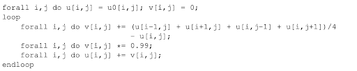
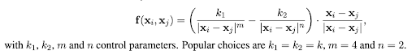
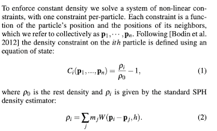
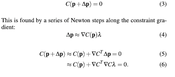
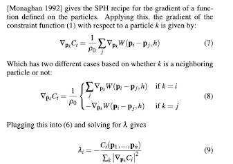

2D simulation for various liquids with differing properties that may result in different fluid movement/ interaction with solid objects in simulation. Able to observe how the drop of solid mass affects the fluid movement of different liquids.
So far, we have conducted research pertaining to how to model fluids as a grid of particle point masses. To accurately render water (and other liquids), we plan to abide by the following three methods:
|  |
|  |
Enforcing Incompressibility:
We need to enforce constant density throughout each particle and so we solve a system of nonlinear constraints, with each constraint being a function of the particle’s position and the positions of its neighbors. The density constraint on the ith particle is as follows:
|  |
Now, we show how to incorporate our density constraint by trying to find a particle’s position correction that satisfies the constraint:
|  |
After applying the SPH recipe for the gradient of a function, the gradient of the constraint function with respect to a particle k is:
|  |
Our milestone slides can be viewed at: https://docs.google.com/presentation/d/1q_dWlJLRlYgt0g8Ke_smAWY-mc1adX66-0DXm9qFL3I/edit?usp=sharing
This writeup is published at: https://cal-cs184-student.github.io/sp22-project-webpages-p-amyjiang/finalproj/checkpoint.html